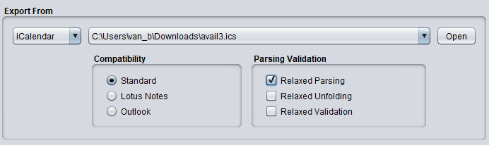

Export From iCalendar

Compatibility
- Standard
This setting let you import iCalendar files created according to the iCalendar standard
- Lotus Notes
This will improve the compatibility with Lotus Notes generated iCalendar files, especially
regarding client- and domain mappings.
- Outlook
When activated it enforces a folding length of 75 characters (by default DBConvert will fold at
73 characters). It allows for spaces when parsing a WEEKDAY list.
Parsing Validation
- Relaxed Parsing
This option is intended as a general relaxation of parsing rules to allow for parsing otherwise
invalid calendar files. Initially enabling this property will allow for the creation of properties
and components with illegal names (e.g. Mozilla Calendar's "X" property).
- Relaxed Unfolding
You can relax DBConvert unfolding rules by activating this option. Some Mozilla-, Linux- and Unix
based calendar apps use the non-standard LF instead of CRLF characters to fold long lines of text.
- Relaxed Validation
When activated DBConvert becomes more lenient toward interpreting missing or faulty time zones in the
iCalender files.